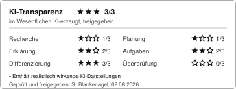

KI-Transparenz-Badge
Vorschau der Darstellungsvarianten · Spezifikation v0.1
Voll — Fußzeile A4, Materialdatenbank
ktx:3|txt:2|bld:3|did:1|loe:0
Kompakt — Folien, Kopfzeilen, enge Layouts
ktx:3|txt:2|bld:3|did:1|loe:0Mini — nur mit Verweis auf die Vollangabe
Alle vier Stufen. Allein stehend nicht zulässig (Spezifikation 8.1).
Schwarz-Weiß-Kopie
Das Badge trägt keine Eigenfarbe und bleibt in Graustufen vollständig lesbar.
HTML-Komponente — Lernplattform
Skaliert mit der Schriftgröße, erbt Farbe und Schriftart vom Kontext.
Stylesheet: assets/ki-badge.css
0,85 rem
1,25 rem
KI-Transparenz 3/3
im Wesentlichen KI-erzeugt, freigegeben
Text/Aufgaben 2/3
Bild/Grafik 3/3
Didaktik/Aufbau 1/3
Lösungen 0/3
Geprüft und freigegeben: S. Blankenagel, 02.08.2026
Reiner Text — Word, LaTeX, E-Mail
Gleichwertig zur Grafik. Das Badge ist die Darstellung, nicht die Sache.
KI-Transparenz 3/3 · im Wesentlichen KI-erzeugt, freigegeben Text/Aufgaben 2/3, Bild/Grafik 3/3, Didaktik/Aufbau 1/3, Lösungen 0/3 Geprüft und freigegeben: S. Blankenagel, 02.08.2026
Im Arbeitsblatt
Lineare Gleichungen — Übungsblatt 3
- Löse die Gleichung 3x + 7 = 22.
- Ein Kletterseil ist 48 m lang …
- Bestimme die Lösungsmenge …